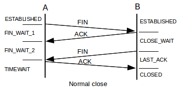

昨天服务器停止服务，node.js进程耗光了服务器的内存及CPU，node.js进程卡死无法被 kill 掉，最后要来root帐号密码，直接 kill -9 才结束掉进程。
再次鄙视一下 forever ，杀不掉原来的 node.js 进程组也就罢了，竟然又拉起了一套新的 node.js 进程组。
统计了一下 10 万个fd都耗光了，其中 9 万多个为 CLOSE_WAIT 状态，此时服务器已经无法响应请求。
CLOSE_WAIT 状态介绍
先看一副TCP连接关闭的状态图（ 来源 ）：

被动关闭一方才会出现 CLOSE_WAIT 状态，由于被动关闭方未调用 close 关闭socket导致，问题肯定是由服务器代码引起。
检测到对端socket关闭然后关闭本端socket是由 node.js 自行完成的，最大的可能是没有机会执行 close 。
我们的应用客户端与服务器有一个tls长连接，当连接断开时客户端会等待3-10秒后尝试重连服务器，如果服务器出现卡顿会导致客户端频繁重连，
如果服务器来不及关闭这些连接，则会出现 CLOSE_WAIT 状态的连接，占用大量文件描述符，减少 CLOSE_WAIT 超时时间能够在一定程度上缓解这个问题，
但是对于我们这种长连接的环境，大量CLOSE_WAIT是问题的表象，而非根源。
参考：《解决CLOSE_WAIT 问题》
内存及CPU占用彪升问题
伴随着 CLOSE_WAIT 出现的状况是 node.js 进程内存及CPU占用超高，单node.js进程内存占用达到 1.5G，CPU占用 90% 以上，此时应该会导致 node.js 响应慢， 来不及关闭连上来的socket。
所以解决问题的关键就是：找出什么原因导致 node.js 内存及CPU 100%占用。
想到的可能是redis负载过高引起，从运维监控图上可以看出一些蹊跷，node.js出问题时redis的连接数也同样彪升，而出问题的机器上刚好就是跑redis的机器， 另一台服务器一直相安无事，没有跑redis。
一次午夜故障元凶浮出水面
在晚上两点的时候服务出现问题，同样的现象，特别留意了一下redis的统计，请求速度很低，只有1200，平时都是5000。偶然在进程列表中发现了 redis-rdb-bgsave 的身影， 不断地执行ps看进程列表，发现 redis-rdb-bgsave 进程不断地出现，查看redis的持久化配置如下：
save 900 1 save 300 10 save 60 10000
我们的系统有大量的redis，1分钟肯定过万，这样redis持久化变是常态了，而且由于用的是机械硬盘，持久化肯定会引起系统卡顿，先将它调整为15分钟最多持久化一次：
config set save "900 1"
重启程序释放资源后系统开始正常响应，但是10多分钟后系统再次无响应，才想起一则经验教训：
跑redis的机器至少要预留和redis占用内存同样大小的空闲内存空间，redis RDB持久化进行fork时最坏会占用双倍内存，内存不足就会动用交换分区，系统性能急剧下降。
于是，立即改配置将redis所在机器上的node.js cluster进程数调小，腾出大把内存，总算没有再出现问题，今晚终于可以入眠。
更多疑问
- 我们的node.js进程为什么常常会占用很多内存？
- netstat中看到CLOSE_WAIT状态的连接输入缓冲往往有数据，而ESTABLISHED状态的连接读写缓冲区往往为空，为什么？
- node.js卡顿时forever杀不死反而启动了新实例帮倒忙，pm2就一定能够解决吗？
- redis持久化引起服务挂掉，已经是在第二个项目中遇到了，终极解决方案是什么？